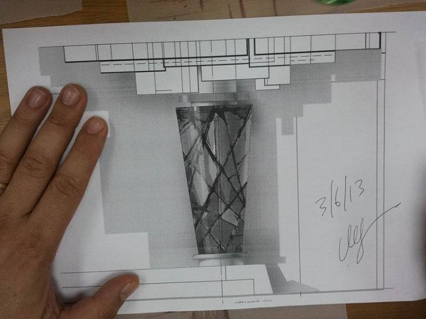
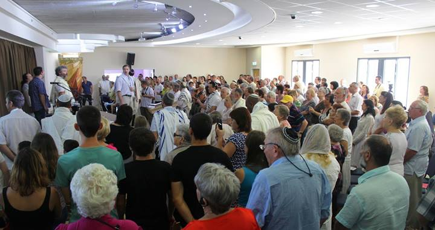
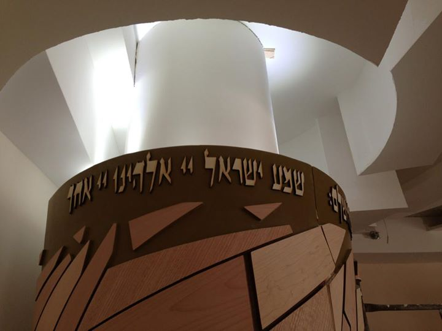

Авангардный АРТ-ДИЗАЙН СИНАГОГИ
Этот дизайн можно назвать арт-мидрашем. Доступными ей средствами архитектор Вета Калиш интерпретирует и исследует Св.Писания.
Авангардный арт-дизайн мессианской синагоги. Автор проекта - архитектор Вета Калиш.
Весь этот зал спроектирован таким образом, что Арон а-Кодеш является его главным и центральным элементом. Когда вы входите в зал, ваш взгляд направляется на Арон а-Кодеш, все элементы потолка, расположение плиток, светильников, все указывает на него.
Основная идея проекта – это прорыв. Когда народ Израиля вышел из Египта, сам Бог вел его, идя перед ним в виде огненного столба и облака. Он показывал путь, защищал от зноя, устрашая и разгоняя врагов. Он соединил собой небо и землю, Он был посреди своего народа и Он созидал народ своими заповедями и своим присутствием.
Мы – то поколение, которое Бог Израиля вывел из земли северной и из всех других стран по всему лицу земли. Мы так долго были рассеяны, что нам снова нужно учиться быть одним народом – Его народом. Нам снова нужен Бог посреди нас, который будет учить нас и созидать нас своими заповедями и своим присутствием, который будет вести нас, указывая путь, защищая от зноя и разгоняя врагов.




Поэтому этот Арон а-Кодеш напоминает нам столб огненный и облако, он как бы прорывается сквозь бетонный потолок к небу, побуждая и нас прорываться сквозь медное небо своими молитвами и всей своей жизнью.
Здесь много символов, которые должны говорить к нам.
Слово было у Бога, - Слово – Двар Элохим – Тора, находится внутри огненного столба.
И Слово стало плотью и обитало с нами – мы выносим Тору, открываем ее, и Слово оживает для нас, когда мы читаем ее.
Свет Слова, его влияние распространяется от Торы по всему лицу земли к тем, кто уже знает Бога, и к тем, кто еще не знает его. Эти светящиеся облака подобно волнам расходятся от Торы по залу и дальше. Весь потолок и весь зал спроектирован так, чтобы подчеркнуть это движение.

Когда мы входим в зал, он направляет наш взгляд к Арон а-Кодеш, к Торе. Внутри Арона есть ступени, они выражают восхождение к Торе – Алия ле Тора. И также волны облаков, расходящиеся от Торы указывают нам на то, что Слово распространяется от Торы вовне – ми Цион теце Тора у двар Адонай ми Ирушалаим. Эти слова написаны на Ароне.
Этот бетонный грубый потолок говорит нам о том, что нам еще рано успокаиваться, этот мир далек до совершенства, Тикун олам – процесс исправления мира продолжается, и у нас впереди еще много творческой работы вместе с нашим Творцом, с тем, который Ха – Оман , Боре Олам – Творец всего сущего.
Амэн.
Спасибо всем специалистам, участвовавшим в этом проекте и без которых он просто не был бы осуществлен. Грише Бересневу – специалисту высокого класса по гипсовым работам, электрикам – Саше, Диме, Володе, специалисту по отделочным работам – Вадиму Бирману, плотнику Миммсу, Эфраиму – автору дизайна огненного столба.
(Это очень важно понять, что специалисты высокого класса, профессионалы – это люди посвященные, ответственные и добросовестные. Они отвечают за свою работу. А если так, то успех дела обеспечен!!! )